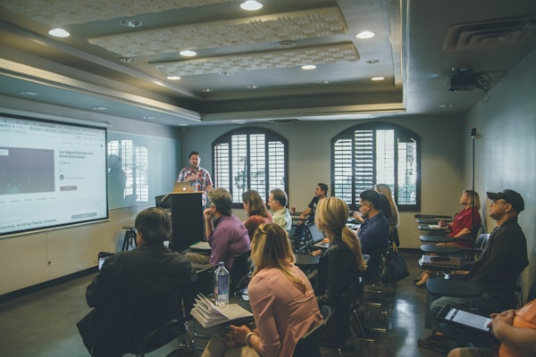

Distribuidora Pilo
IT & Developer
2022 — 2025
- Soporte técnico integral para 8 usuarios administrativos: hardware, redes, software y resolución de incidencias.
- Desarrollé el primer sistema de gestión interno sobre Google Workspace + Apps Script, cuadruplicando la velocidad de trabajo al pasar de procesos manuales a digitales con macros.
- Migré el 100% del catálogo de productos (300+) y la tabla de clientes (1200+) al nuevo sistema.
- Liderando la migración del sistema a Node.js con arquitectura moderna.

Encendido
Administración & Sistemas
2015 — 2021
- Digitalicé el 100% de la documentación física: 9000 fichas con acceso y trazabilidad mejorados.
- Implementé CRM, sistema de gestión de taller, POS y administración de 17 proveedores sobre Google Cloud con scripts personalizados.
- Mantuve toda la infraestructura IT operativa sin interrupciones durante 6 años.

Transeven
Implementación & Capacitación
2015
- Migré 2500 registros al nuevo software y digitalicé la carga de artículos, empleados, vehículos y acciones de trabajo.
- Capacité a 6 usuarios y diseñé flujos de trabajo auditables para 4 áreas.

La Esquina del Confort
Data Entry & Administración
2009 — 2015
- Administré el stock de 1200 artículos del hogar coordinando con 12 vendedores.
- Mantuve registros contables durante 6 años y generé reportes periódicos para la toma de decisiones gerenciales.